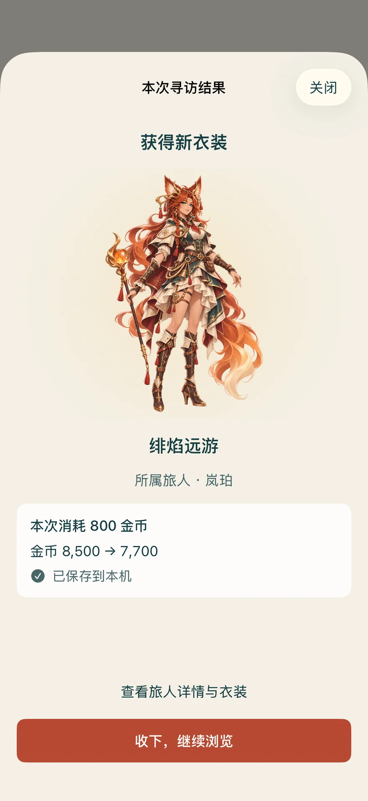
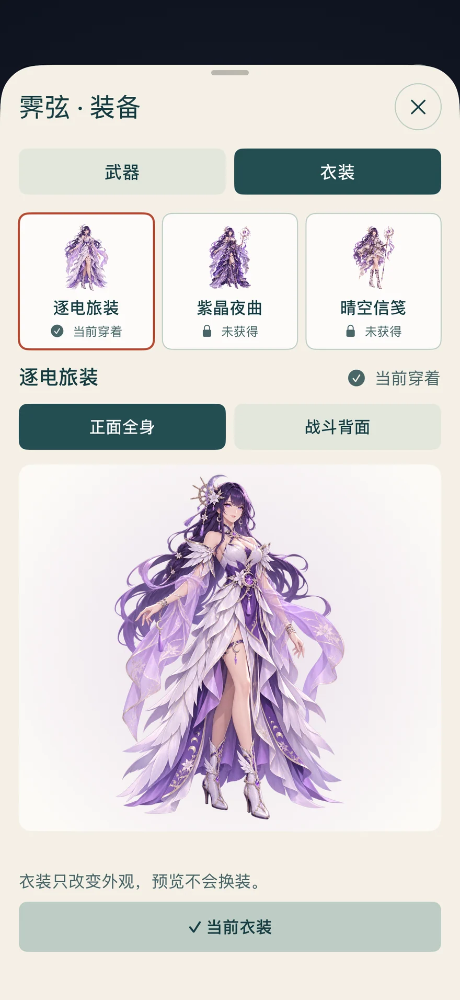
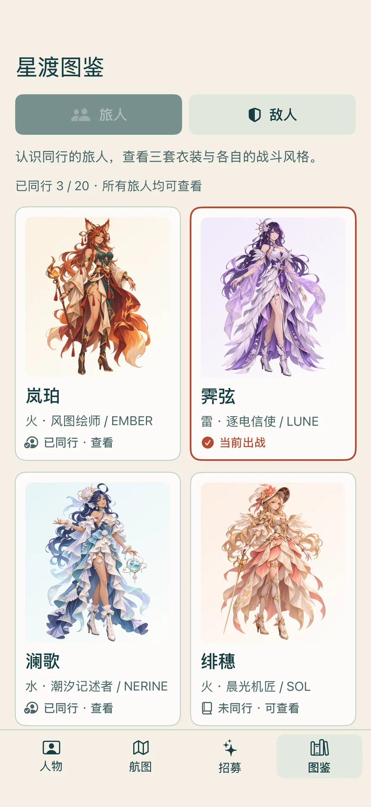
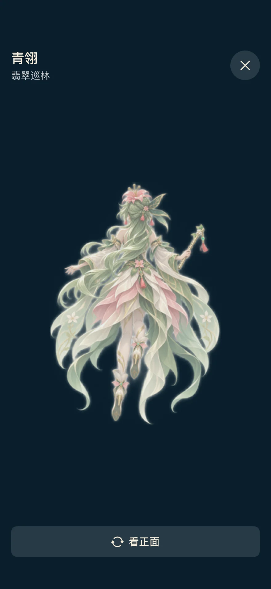
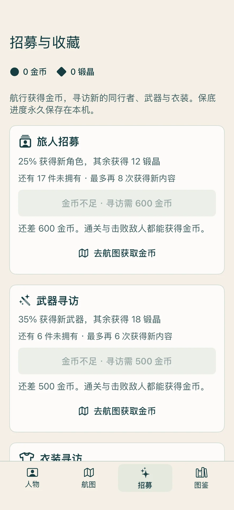
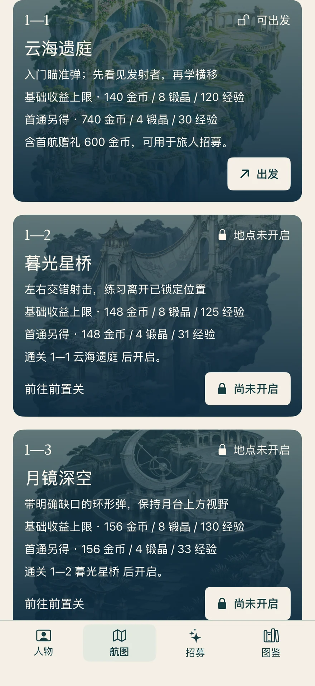
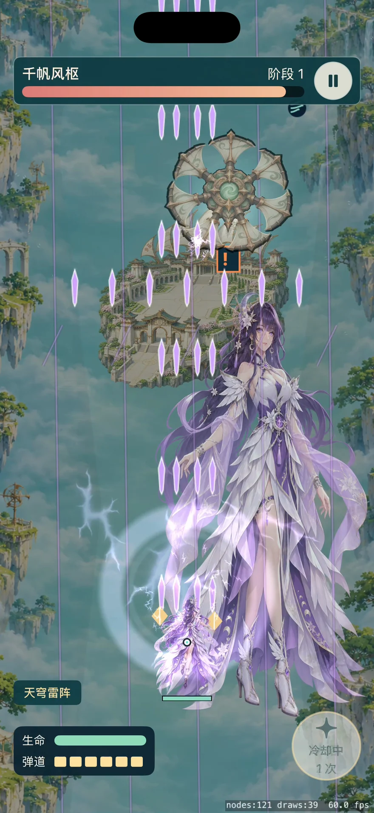

星渡 · 原生 iOS
看清收藏，
每次操作都有结果。
内部 TestFlight · 8.2.0（21）三组检查合并出 13 项体验问题。本轮集中解决招募反馈、主角团图鉴、衣装预览，以及奖励与成长说明。请在原来的 TestFlight 中更新。
以下是原生 App 在专用模拟器中的实际界面。点击截图可放大查看；收藏与余额使用展示存档。
操作录屏
衣装选择、招募结果与角色浏览。录屏无声，游戏音乐与音效仍可在设置中独立开启。

抽到了什么，立刻看见
角色、武器、衣装和锻晶都有独立结果。显示实际消耗与余额，收下结果后才继续下一次寻访。

三套外观，直接比较
先预览，再决定换上；当前穿着和试看中的款式明确区分。支持正面全身与战斗背面。

图鉴也有主角团
20位旅人都可以查看。与敌人分区浏览，从招募人物卡也能直接打开同一份档案。

尚未同行，也能先了解
未拥有也能放大看衣装，切换正面与战斗背面。角色档案另可查看背景、元素、招式与武器；浏览不会改配置或消耗资源。

不能操作，也说清原因
金币不足时显示还差多少，并可直接去航图找关卡。领取首航自选与查看角色分开，避免误领。

去哪里，能得到什么
地点与难度分别说明。基础收益、首通额外和首航600金币赠礼都有明确标示，导航保留已选难度。

战斗信息更清楚
移除被大招按钮遮住的重复技能名，保留全身立绘、血条与原生光影。竖屏单指拖动和自动射击保持原有方式。
本轮处理的 13 项
- 招募结果离屏、同类材料反馈不清与误触重复扣费。
- 金币不足按钮缺少原因和下一步。
- 图鉴缺少主角团，角色收藏卡无法浏览。
- 三套衣装难比较，未拥有外观没有完整预览路径。
- 攻击演示没有采用选中的衣装。
- 结算武器通用名与装备页专武名不一致。
- 难度锁定时仍写“可出发”。
- 基础收益与首通额外奖励未分清。
- 角色自动升级和武器材料升级容易混淆。
- 历史操作收据出现在错误的页面。
- 大招名字重复且被按钮遮挡。
- 钱包与关键费用的文字过小。
- 重新打开攻击演示会重放上一次大招。